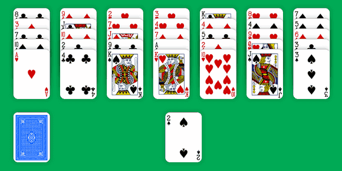
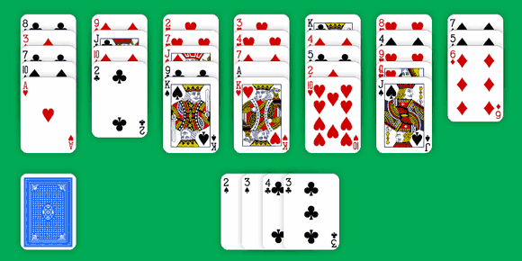
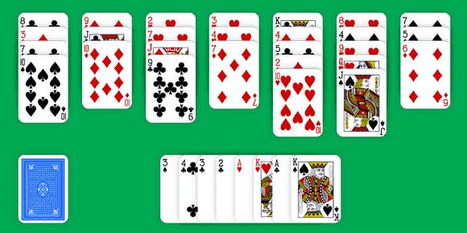
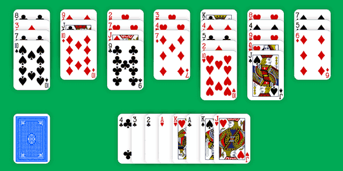

Golf is one of the oldest forms of solitaire card games. It was called One Foundation and I first play it from the game developed by Ken Sykes for Microsoft Entertainment Pack. It was actually the first game I ever created with Visual Basic 3 (after some kinds of Breakout and Pong for Apple II).
Golf Solitaire is played with a single pack of 52 playing cards. Like Klondike Solitaire, the game starts with a Tableau where seven columns of cards are dealt. Except this time, each stack contains five cards and all cards are face up.
The remaining cards forms a Stock in the bottom left and the first one is turned over to start the Foundation. And now, our goal is to send all the cards from the Tableau to the Foundation.

We can move the top card from any of the seven stacks to the Foundation. It must be either one higher or one lower in rank than the top card on the Foundation, regardless of suit.
So in the above example, either the ace of hearts or the 3 of spades may be built on the 2 of spades.
Then, if we played the 3 of spades, it may be followed by the 4 of clubs from the second column. 4 is one greater than 3 and suit doesn't matter.
Changes of direction are allowed at any time. Thus we can play the 3 of clubs from the last column (which is now on top as we first moved the 3 of spades) over the 4 of clubs. So far, we played the following sequence: 2, 3, 4, 3 which is totally valid.

Let's build the 2 of clubs then the ace of hearts.
In the strict form of Golf, we can only move twos on aces, kings are only allowed on queens and we can't play nothing on kings. With this rule, it's quite impossible to win (unless you keep playing all day long).
Solitaire-Play uses the variant where sequences may turn the corner: we can play kings on aces and aces on kings. With this change, game become a little more rewarding.
To follow with our current game, we can now play either the king of spades or the king of hearts over the ace of hearts.
The king of hearts is a better choice, because it shows the ace of clubs. So we can build this ace then the king of spades.

After our last move, no more card from the Tableau can be played to the Foundation. We have to deal another card from the Stock and try to resume the building.

Jack of hearts! We are lucky. Now we can play:
It's better to play cards that will allow for long streaks of play (but there are some exceptions).
You win the game when all cards in the Tableau have been built to the Foundation. The game is over when the Stock is empty and no more moves are possible.
Game after game, you'll understand that it's quite difficult to win. There will always be some cards on the Tableau. And since win is unusual, your goal is to finish the game with the fewest cards possible.
Rules are easy. Play may seem a little bit mechanical. But it becomes exciting when you play more on instinct. Once you get to see the game, the moves ahead, you can fully enjoy a fast paced and very fun game.
Don't take my words for it. Try it yourself and go put your luck and patience to the test by playing Golf Solitaire online.
And remember, it's a responsive game like Klondike Solitaire. You can play it for free with phone, tablet or desktop!
Michel (2015/10/24)